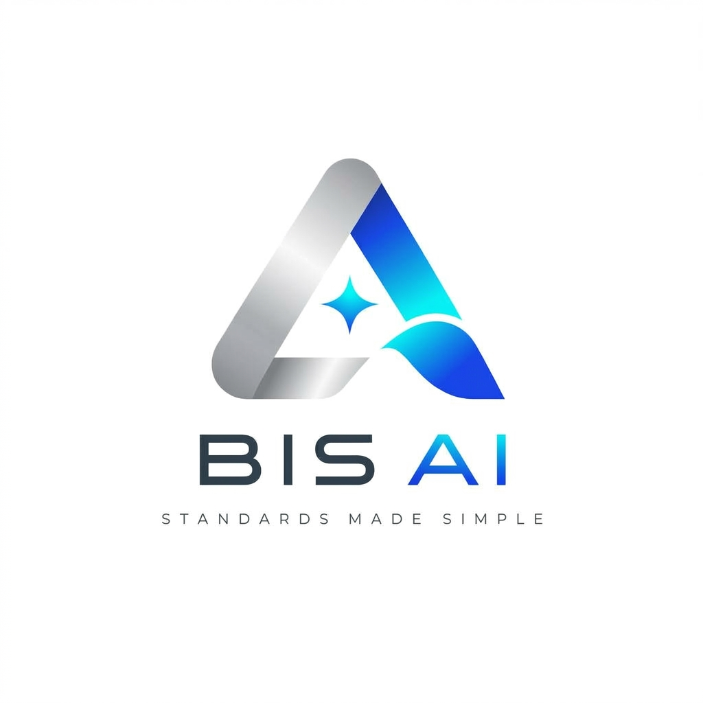
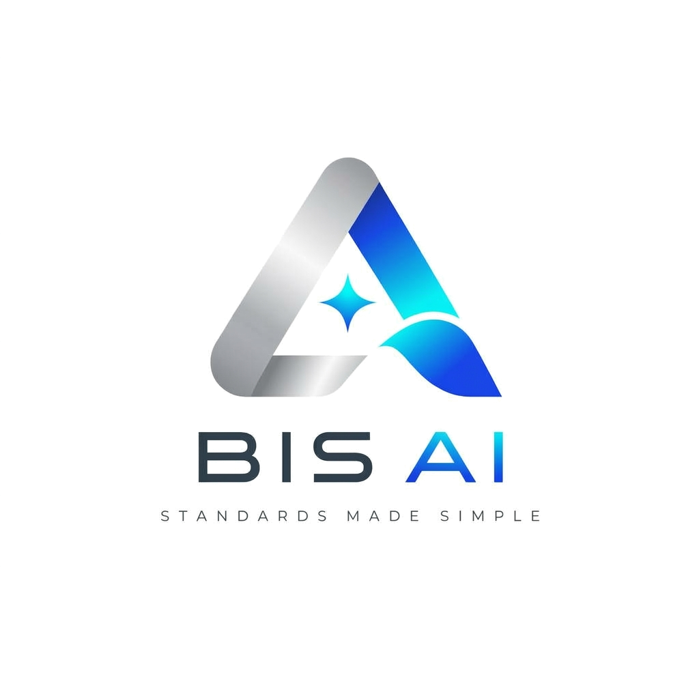
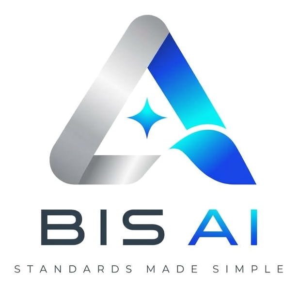

Folder: d:\Aaditya\Desktop\SIH\logos\

Best for dark slides, websites, and presentations with colored backgrounds.

Best for official documents, printable PDFs, and light keynote slides.
Best for app icons, avatars, and compact UI headers.

Primary composite brandmark with emblem and typography.
High-resolution conceptual rendering of the BIS-AI emblem.